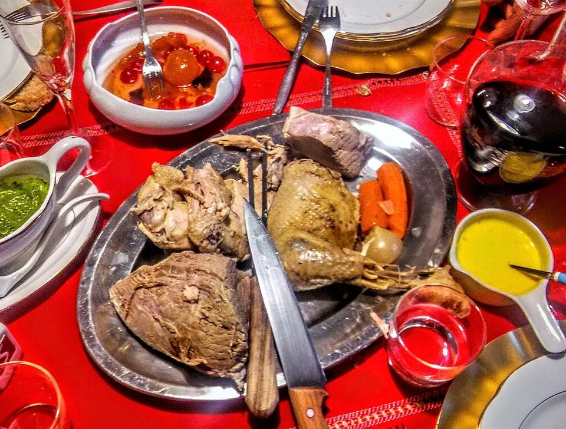
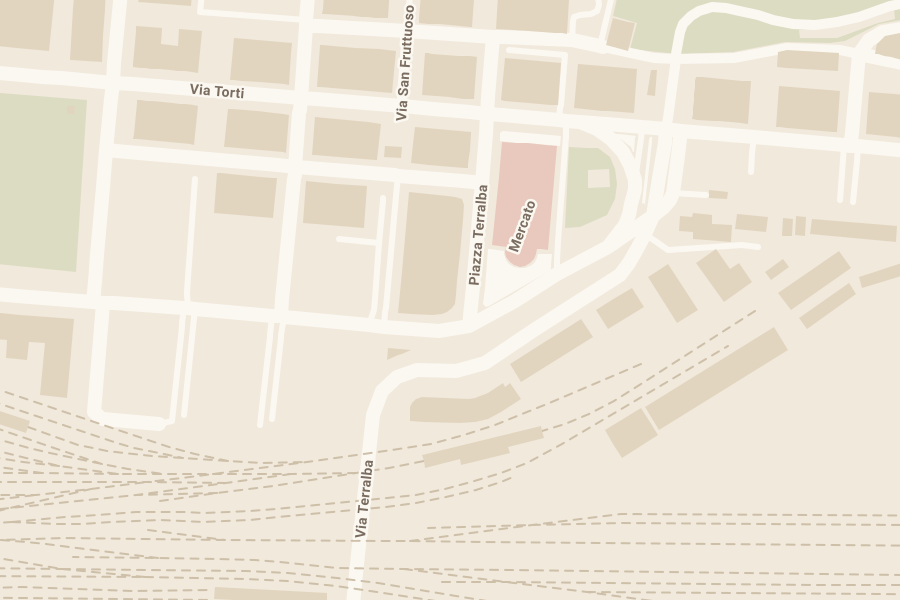

Piazza Terralba 21r · Genova
Trattoria Marradi
Pranzo dal lunedì al venerdì, a pochi passi dal Mercato di Terralba. Menu completo a 12 €, con piatti che cambiano ogni giorno.

A pranzo
Menu completo12 €
Solo primo9 €
Il menu completo comprende primo, secondo con contorno e caffè.
Quando
Lun – Ven, 12:00 – 15:30
Solo a pranzo. Sabato e domenica chiuso.
Dove
Piazza Terralba 21r
Accanto al Mercato di Terralba, Genova
Prenota
010 502015
Per un tavolo o per sapere il menu di oggi
La trattoria
In Piazza Terralba, accanto al mercato
La Trattoria Marradi è aperta solo a pranzo, dal lunedì al venerdì. Ogni giorno c'è un menu diverso: qualche primo, qualche secondo con il contorno e i dolci fatti in casa.
Con 12 € mangi primo, secondo con contorno e caffè. Se hai poco tempo, il solo primo costa 9 €.
- Il menu cambia ogni giorno
- Chiama in mattinata per sapere cosa prepariamo.
- Il martedì c'è il bollito misto
- Gli altri giorni, chiedi il menu del giorno.
- Gruppi e pranzi di lavoro
- Se venite in tanti, meglio avvisarci prima.
- Accessibile
- Il locale è accessibile in sedia a rotelle.


Orari e dove
Piazza Terralba 21r
16143 Genova, accanto al Mercato di Terralba.
| Lunedì | 12:00 – 15:30 |
|---|---|
| Martedì | 12:00 – 15:30 |
| Mercoledì | 12:00 – 15:30 |
| Giovedì | 12:00 – 15:30 |
| Venerdì | 12:00 – 15:30 |
| Sabato | Chiuso |
| Domenica | Chiuso |

Trattoria Marradi
Per prenotare o chiedere il menu di oggi
010 502015Lun – Ven, 12:00 – 15:30 · Piazza Terralba 21r, Genova